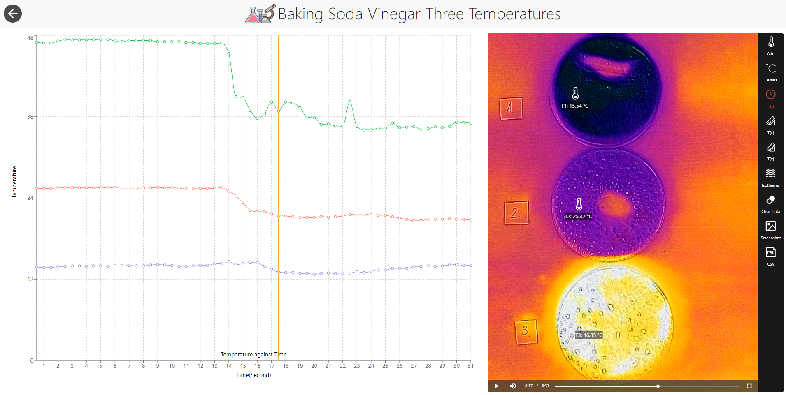

IFI Tests Remote Inquiry on the Telelab Platform
Online chemistry students at VHS Learning propose their own hypotheses — and watch IFI staff run the experiment live, in thermal imaging, through Telelab.
IFI Tests Remote Inquiry on the Telelab Platform
The reaction of baking soda and vinegar is an endothermic (absorbing heat) one commonly used in chemistry education. As in many chemical reactions, this one occurs faster at a higher temperature. But how can we observe the acceleration? Counting the bubbles produced in the reaction is probably not a practical and reliable way as there are too many bubbles and they form and break all the time during the reaction. Thermal imaging may provide an easier method to investigate and visualize this relationship. If we start with three petri dishes that contain the same amount of vinegar at different temperatures and then add the same amount of baking soda to them, the dish with the highest initial temperature should have the largest temperature drop as the reaction rate in that dish is the greatest. Mathematically, the relationship between the reaction rate and the temperature is described by the Arrhenius equation: k=Aexp(-Ea/RT), where k is the rate constant, T is the absolute temperature, A is a constant specific for the reaction, Ea is the activation energy for the reaction, and R is the universal gas constant.
This was in fact a remote experiment proposed by some students at an online summer course offered by the VHS Learning — a partner of IFI, when they were challenged by their chemistry teacher Stephen Sobolewski to come up with their own ideas to investigate factors that may affect chemical reactions. But the online students could not carry out the investigations by themselves as they did not have a thermal camera at home (and other means of verifying their ideas would be too cumbersome to try). Fortunately, they were able to submit a request to conduct a remote experiment to test their hypotheses on the Telelab platform. The experiment was implemented by IFI staff in tandem with Mr. Sobolewski and the data were shared with the students in a live session which students joined through the Internet. During the session, students closely observed the live thermal imaging stream generated in the experiment and carefully analyzed the data of temperature arrays distributed to them in real time on their own computer screens. The experiment was also recorded (or pre-recorded in a more staged fashion) and published in the online video store of Telelab so that students can revisit them any time if needed. This example demonstrates the power of Telelab in supporting this kind of remote inquiry, which is an invaluable enhancement to distance learning.
To see a recorded experiment that demonstrates this effect, click here.
